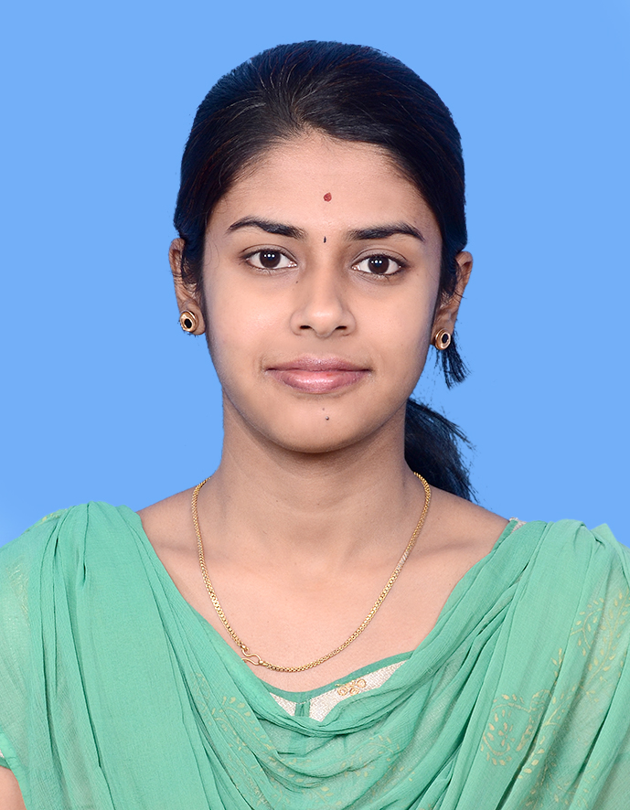

KARTHIGA RAMASAMY

Summary
Energetic software engineer with 5.5 years of experience in developing web applications using Java. Strong hands on experience in Spring MVC and BOOT, Mongo, XQuery, MarkLogic. Ability to learn and adapt emerging technologies quickly.Strong analytical skills with high proficiency in debugging and problem solving
Industry Experience
- Cognizant Technology Solutions - Associate(July 2014 - Jan 2020)
Technical Skills
- Hardware / Platforms - Windows
- Technology - Java, MarkLogic
- Frameworks - Spring Boot, Spring MVC, Hibernate, Mongo and PowerMockito
- Web services - Restful Web services
- Programming Languages - Java, Xpath, Xquery
- Databases - Oracle, SQL, MarkLogic & Mongo
- Scripting Languages - Angular , JavaScript, HTML5, CSS3, JQuery, Ajax, JSP
- Development Tools - Eclipse, Sonar, Putty, WinSCP, IBM RAD, RoboMongo
- Versioning Tools - SourceTree , GIT
Certification
- Oracle Certifications (Oracle Certified Associate and Oracle Certified Professional)
Industry Rewards And Recognizition
- Best Paramount developer
- Got Pat on Back (2015) Award as part of IME
- Best Team Award for Search Supremacy
- Certificate of recognition for exemplary presentation for Search Supremacy
- Awarded Best Module for multi recognize feature as part of Gamification
- Awarded RELX Innovation challenge H1 for LN Wiki Contribution
- Awarded Star Award for Q3 2017
Project Experience
- Claim Model Office - Metropolitan Life Insurance Company (April 2017 to Jan 2020)
Claim Model Office channel is used to incorporate all BPO and different channels used for raising CLAIM.
Claim can be raised for absences, long term disability, short term disability, maternity, paternity etc. It is
the portal where the claim can be raised for employee by employer, employee and others for their
absences etc. Raised claim can be approved after adjudication. Once after approval the claim can be
processed.
- Lexis Advanced Shared services - Content and Search (Nov 2014 to Feb 2017 )
Lexis Advance is a legal research tool that allows a user to search, manage and store a variety of legal
content from the LexisNexis source collection, which can be accessed on demand. It is a more efficient,
more intuitive way to search for the results they need. LexisNexis Search helps you pinpoint relevant
matters and legal expertise and quickly find and validate internal documents like pleadings, depositions,
memos, deal documents and motions. The aim of the product is to introduce the next-generation of
legal research products through innovation and cutting edge technology by providing industry leading
content that enables the user to have a smarter, streamlined experience.
Roles And Responsibilities
- Analysis, Technical Design Documentation Preparation, Coding and Unit testing.
- End Customer communication for requirement clarification and bug fixes
- Web Team/Webstar analysis and fixes
- Ensuring code quality using Sonar and veracode scanning
- Manual testing using unit test plans and automated testing using Junit coverage
Other